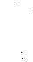

Yüzbaşı Peter Y'ang-Yeovil, Londra'daki Merkezi Haberalma Genel Merkezi'nde yaklaşık olarak dakikada alh tanesi gibi bir hızla raporlarla ilgileniyordu. Telefonla, telgrafla, kabloyla, jaunte'lemeyle bilgi akıyordu. Bombardımanın şekli şemali hızla belirginleşmekteydi.
SALDIRI 60 VE 120 BATI BOYLAMLARI ARASINDA KALAN K & G AMERİKA'DA YOĞUNLAŞTI ... K'DE LABRADOR'DAN ALASKA'YA ... G'DE RİO'DAN EKVATOR'A ... FÜZELERİN YAKLAŞIK YÜZDE ONU (%10) ENGELLEME PERDESİNİ AŞTI ... TAHMİNİ NÜFUS KAYBI: ON - ON İKİ
MİLYON ARASI ...
"Jaunte'leme için Allaha şükürler olsun," dedi Y'ang-Yeovil. "Yoksa kayıplar bunun beş katına çıkardı. Yine de bu tam bir nakavta yakın. Böyle bir yumruk daha alırsak, Terra'nın işi biter."
Bunları, bürosundan içeri ve dışarı jaunte'leyen, bir görünüp bir kaybolan, masasına raporlar bırakıp bir duvarın tamamını kaplayan cam bir panonun üzerine sonuçlar ve denklemler yazıp duran yardımcılarına söylemişti. Teklifsizlik burada bir kuraldı ve bir yardımcısı kapısını vurup özenli bir resmiyetle içeri girdiğinde, Y'ang-Yeovil şaşırıp şüphelendi. ' "Yine ne oldu?"
"Seni görmek isteyen bir bayan var, Yeo."
"Şimdi şakanın sırası mı?" dedi Y'ang-Yeovil öfkeli bir sesle. Saydam panoda felaketi tanımlayan Whitehead denklemlerini gösterdi. "Şunları oku ve dışarı çıkarken ağla."
"Çok özel bir bayan Yeo. İspanyol Merdivenleri'ndeki Venüs'ün."
"Kim? Hangi Venüs?" "Şu Kongo Venüs'ün."
"Ha! O mu?" Y'ang-Yeovil kızardı. "İçeri gönder." "Onunla özel görüşeceksin tabii."
"Tabii mabii yok. Dışarıda bir savaş var. O raporları göndermeye devam edin, ama herkese söyle, benimle konuşmaları gerekirse gizli dili kullansınlar."
Robin Wendesbury büroya girdiğinde üzerinde hala yırtık beyaz tuvaleti vardı. Elbiselerini değiştirmekle vakit kaybetmeden hemen New York'tan Londra'ya jaunte'lemişti. Yüzü gergin ama çok güzeldi. Y'ang-Yeovil kızı birkaç saniye inceledikten sonra onun hakkındaki ilk izleniminin doğru olduğunu fark etti. Robin de aynı incelemeyi yaptığında gözleri büyüdü. "Ama siz İspanyol Merdivenlerindeki aşçısınız! Angelo Poggi!"
Bir Haberalma Subayı olarak Y'ang-Yeovil bu sorunla baş etmek için hazırlıklıydı. "Aşçı değil madam. Kendi büyüleyici kişiliğime dönmeye zamanım olmadı. Oturun lütfen, Bayan...?"
"Wendesbury. Robin Wendesbury."
"Çok memnun oldum. Ben Yüzbaşı Y'ang-Yeovil. Gelip beni görmeniz ne incelik Bayan Wendesbury. Beni zor uzun bir araştırmadan kurtardınız."
"A- ama anlamıyorum. İspanyol Merdivenleri'nde ne yapıyordunuz? Neden orada - ?"
Y'ang-Yeovil kızın dudaklarının kımıldamadığını gördü. "Ah? Bir telepat mısınız Bayan Wendesbury? Nasıl mümkün olabilir? Güneş sistemindeki tüm telepatları bildiğimi sanıyordum."
"Ben tam bir telepat değilim. Bir göndericiyim. Yalnızca gönderebilirim ...alamam."
"Bu da, sizi dünyanm gözünde değersiz kılıyor tabii. Anlıyorum." Y'ang-Yeovil kıza sempatiyle baktı. "Ne kadar kötü bir şans Bayan Wendesbury ... telepatinin tüm olumsuz yanlarına sahipsiniz, ama avantajlarından yoksunsunuz. Sizi çok iyi
anlıyorum. İnanın bana."
"Allah razı olsun ondan. Söylemeden bunufarkeden ilk insan."
"Dikkatli olun Bayan Wendesbury, sizi duyabiliyorum. Şimdi, İspanyol Merdivenleri demiştik?"
Y'ang-Yeovil duraksayıp dikkatle kızın endişeli düşüncelerini dinledi: "Neden beni arıyordu? Beni mi? Yabancı Savaş-Aman Tanrım! Canımı yakacaklar mı? Kesicekle- Bilgi alma. Ben-"
"Sevgili bayan," dedi Y'ang-Yeovil yumuşak bir sesle. Anlayışla kızın ellerini tuttu. "Bir saniye beni dinleyin. Bir hiç yüzünden telaşlanıyorsunuz. Belli ki bir Yabancı Savaş Kışkırtıcısısınız. Doğru mu?"
Kız başını salladı.
"Bu büyük talihsizlik, ama şimdi bu konuyu geçelim. Haberalma'nın insanlardan işkence yaparak bilgi almasına gelince ... bunların hepsi propaganda."
"Propaganda mı?"
"Biz bir avuç beceriksiz değiliz, Bayan Wendesbury. Ortaçağ yöntemlerini kullanmadan insanlardan nasıl bilgi alınacağını biliyoruz. Ama nasıl söylesem, insanları önceden yumuşatmak için bu söylentileri yayıyoruz."
"Bu doğru mu? Yalan söylüyor. Bu bir numara."
"Bu doğru Bayan Wendesbury. Biraz düzeltme yapabilirim, ama şu anda buna gerek yok. Hele siz bilgi vermek için kendi isteğinizle buraya kadar gelmişken."
"Bu adam çok usta ... çok hızlı ... O-"
"Yakın zamanlarda fena kandırılmışsınız gibi gibi geliyor Bayan Wendesbury ... Canınız yanmış sanırım."
"Evet, öyle. Gerçekten de öyle. Daha çok da kendi kendimi yaktım. Ben bir aptalım. Nefret dolu bir aptalım!"
"Asla bir aptal değilsiniz Bayan Wendesbury ve asla nefret dolu değilsiniz. Kendinize ilişkin görüşlerinizi bu duruma getirecek ne oldu bilmiyorum, ama onları düzeltmeyi umuyorum. Peki öyleyse ... kandırıldınız öyle mi?”
"Daha çok kendiniz tarafından, öyle mi? Bunu hepimiz yaparız. Ama size biri yardım etmiş. Kim?" "Ona ihanet ediyorum." "O zaman bana söylemeyin."
"Ama annem ve kardeşlerimi bulmam gerek ... artık ona güvenemem ... bunu kendim yapmam gerek." Robin derin bir nefes aldı. "Size Gulliver Foyle adında birinden söz etmek istiyorum."
Y'ang-Yeovil zaman kaybetmeden işe girişti.
"Trenle geldiği doğru mu?" diye sordu Olivia Presteign. "Bir lokomotif ve yolcu vagonu olan bir trenle? Ne muhteşem bir cüret."
"Evet, olağanüstü bir genç adam," diye cevapladı Presteign. Evinin kabul salonunda, kızıyla başbaşa, çelik kadar gri ve çelik kadar sert görünüyordu. Hizmetçilerin ve personelinin güvenli bir yerlere panik dolu jaunte'lerinden dönmelerini beklerken ailesinin şerefi ve hayatını koruyordu. Soğukkanlılıkla Olivia'yla sohbet ederken onun bir kere bile içinde oldukları büyük tehlikeyi fark etmesine fırsat vermiyordu.
"Baba, çok yoruldum."
"Yorucu bir gece oldu hayatım. Ama lütfen henüz odana çekilme."
"Niçin?"
Presteign kıza onunla kalırsa daha güvende olacağını söylemedi. "Yalnızım Olivia. Birkaç dakika konuşalım."
"Çok cesurca bir şey yaptım, Baba. Saldırıyı bahçeden seyrettim."
"Hayatım! Yalnız mı?" "Hayır. Fourmyle'la birlikte."
Kuvvetli darbeler Presteign'm kapatmış olduğu ön kapıyı sarsmaya başladı.
"O da nedir?"
"Çapulcular," diye cevap verdi Presteign sakin bir tavırla. "Telaşlanma Olivia. İçeri giremezler." Birkaç farklı silahı bir sabır oyunu kadar özenle dizmiş olduğu masaya doğru bir adım attı. "Hiçbir tehlike yok canım." Kızın dikkatini başka bir yöne çekmeye çalıştı. "Fourmyle'dan söz ediyordun ..."
"Ah, evet. Birlikte seyrettik, bombardımanı birbirimize tarif ettik."
"Eşlik eden bir olmadan mı? Bu sağduyulu bir davranış
değil Olivia."
"Biliyorum. Utanılacak biçimde davrandım. O kadar büyük, o kadar kendinden emin görünüyordu ki, ona Bayan Kibir muamelesi yaptım. Çok fazla ağırbaşlı ve mesafeli olduğu için Bayan Kibir diye takıldığım dadım Bayan Post'u hatırladınız mı? Ona da Bayan Post gibi davrandım. Öfkeden köpürdü bana. Bu yüzden bahçede beni aramaya geldi."
"Ve sen kalmasına izin mi verdin? Şok oldum hayatım."
"Ben de öyle. Sanırım heyecandan aklımı kaçıracaktım. Neye benziyor baba? Anlatın bana. Size nasıl görünüyor?"
"Gerçekten de iri. Uzun boylu, çok esmer, bayağı anlaşılmaz. Bir Borgia gibi. Güvenle vahşilik arasında değişiyor san. ki."
"Ah, demek vahşi öyle mi? Ben de görebiliyordum. Tehlikeyle parlıyor. Çoğu insan yalnızca titrek bir ışık yayar ....o bir . şimşeğe benziyor. Fazlasıyla büyüleyici."
"Hayatım," diye yavaşça uyardı Presteign. "Evli olmayan . bayanlar bu şekilde konuşmayacak kadar iffetli olmalıdır. Ceres'li Fourmyle gibi bir paruenıu'yle bir gönül ilişkisine girmen, asla hoşuma gitmez."
Aşçılar, garsonlar, kapıcılar, arabacılar, uşaklar, hizmetçilerden oluşan Presteign personeli kabul salonuna jaunte'ledi. Ölümden kaçışlarından sonra hepsi sarsılmış ve süklüm püklüm görünüyordu.
"Görevlerinizi terk ettiniz. Bu unutulmayacaktır," dedi
Presteign soğukça. "Güvenliğim ve şerefim bir kez daha sizin ellerinizde. Onları koruyun. Bayan Olivia ve ben çekiliyoruz."
Kızının koluna girip, buz kadar saf prensesini vahşice koruyarak medivenlerden çıkardı. "Kan ve para," diye mırıldandı Presteign.
"Ne dediniz baba?"
"Bir aile zaafımızı düşünüyordum Olivia. Bu zaaf sana da geçmediği için Tanrı'ya şükrediyordum." "Ne zaafı bu?"
"Senin bilmen için bir neden yok. Fourmyle'ın paylaştığı bir zaaf."
"Demek kötü biri, öyle mi? Biliyordum. Bir Borgia gibi demiştiniz. Kara gözlü ve yüzünde çizgiler olan bir Borgia. O desenin anlamı bu olmalı." "Desen mi hayatım?"
"Evet. Yüzünde garip bir desen görebiliyorum ...sinir ve kasların normal elektriği değil. Onun üzerine yayılmış bir şey. Başından beri beni büyüledi."
"Nasıl bir desenden söz ediyorsun?"
"Harika ... muhteşem bir kötülük simgesi. Tarif edemem. Bana yazmak için bir şeyler verin. Size göstereyim."
Bir Chippendale yazı masasının yanında durdular. Presteign, Olivia'ya gümüş çerçeveli bir kristal dilimi uzattı. Kız parmak ucuyla dokununca kristalin üzerinde siyah bir nokta oluştu. Parmağını hareket ettirdi ve siyah nokta bir çizgi haline geldi. Hızlı hareketlerle bir şeytan maskesinin korkunç girdaplarını ve hatlarını çizdi.
***
Saul Dagenham karanlık yatak odasından çıktı. Birkaç saniye sonra bir duvar aydınlandığında içeriye ışık doldu. Sanki dev bir ayna Jisbella'nm yatak odasını yansıtıyor gibiydi, ama garip bir. değişiklik vardı. Jisbella yatakta tek başına yatıyordu, ama yansımada Saul Dagenham yatağın ucunda tek başına oturuyordu. Ayna aslında eş odaları ayıran kurşundan bir cam bölmeydi. Dagenham kendi odasının ışığını yakmıştı.
"Saatli aşk," Dagenham'ın sesi bir hoparlörden geliyordu. "İğrenç."
"Hayır Saul, asla."
"Umutsuz."
"O da değil."
"Ama mutsuz."
"Hayır. Çok açgözlüsün. Elinde olanla yetin."
"Tanrı biliyor ya, şimdiye kadar elimde olandan çok daha fazlası bu. Harikasın."
"Sen de saçmalıyorsun. Haydi şimdi uyu hayatım. Yarın kayağa gidiyoruz."
"Hayır, plan değişikliği oldu. Çalışmam gerek."
"Ama Saul ... bana söz vermiştin. Artık çalışma, üzüntü, koşuşturma yoktu. Sözünde durmayacak mısın?"
"Ortada bir savaş varken duramam.".
"Savaşın canı cehenneme. Sen Tycho Sands'de yeterince fedekarlık yaptın. Senden daha fazlasını isteyemezler."
"Bitirmem gereken bir iş var."
"Bitirmene yardım edeçeğim."
"Hayır. Bu işin dışında kalsan daha iyi olur Jisbella."
"Bana güvenmiyorsun."
"Sana bir şey olmasını istemiyorum."
"Bize hiçbir şey dokunamaz."
"Foyle dokunabilir."
"N-Ne?"
"Fourmyle aslında Foyle. Bunu biliyorsun.. Bildiğini biliyorum."
"Ama sana hiç -"
"Hayır, bana hiç söylemedin. Harikasın. Benim güvenime de aynı şekilde sadık kal, Jisbella." "O zaman nasıl keşfettin?"
"Foyle bir hata yaptı." "Ne hatası?" "Adı."
'Ceres'li Fourmyle mı? Ceres şirketini satın aldı."
"Ama Geoffrey Fourmyle?"
"Uydurdu."
"Uydurduğunu düşünüyor. Aslında hatırladı. Geoffrey Fourmyle Mexico City'deki Ortak Hastane'de Megalomani Testinde kullandıkları ad. Foyle'u konuşturmaya çalışırken Megal Modu kullanmıştım. Bu ad belleğinde gömülü kalmış olmalı. Oradan bulup çıkardı ve kendisinin yarattığını sandı. O isim beni uyandırdı."
"Zavallı Gully."
Dagenham gülümsedi. "Evet, kendimizi dışarıya karşı ne kadar korursak koruyalım, hep içimizdeki bir şeyler tarafından tongaya düşürülürüz. İhanete karşı bir koruma yoktur ve hepimiz kendimize ihanet ederiz."
"Ne yapacaksın Saul?"
"Ne mi? İşini bitireceğim tabii."
"On kilo PyrE için mi?"
"Hayır. Kayıp bir savaşı kazanmak için."
"Ne?" Jisbella odaları ayıran camdan duvara yapıştı. "Sen mi Saul? Vatanseverlik mi?"
Dagenham neredeyse suçluluk duyarak başını salladı. "Çok saçma. Gülünç. Ama öyle. Beni tamamen değiştirdin. Yine aklı başında bir adamım artık."
O da yüzünü duvara bastırdı ve sekiz santim kurşun camdan öpüştüler.
Nubiyum Denizi, havasız kültürlere ihtiyacı olan anaerobik bakteriler, toprak organizmaları ve nadir küfler gibi tıp ve endüstri için çok önemli olan tüm mikroskopik yaşam formlarının
büyümesi için ideal bir ortamdı. Bakteri A.Ş., merkeze yığılmış barakalar, bürolar ve fabrikanın çevresinde genişleyen patikaların kestiği büyük bir kültür tarlaları mozayiğiydi. Her tarla, yüz ft çaplı, on iki inç yüksekliğinde ve iki molekülden kalın olmayan dev cam teknelerin içindeydi.
Şafak çizgisinin ayın yüzeyinde süzülüp Nubiyum Denizi'ne ulaşmasından bir gün önce tekneler kültür ortamıyla dolduruluyordu. Havasız aydaki ani ve kör edici şafakta teknelere tohumlar ekiliyor ve güneşin sürekli parladığı bundan sonraki on dört gün içinde uzay giysileri içindeki tarla işçileri patikalarda gidip gelerek bu tohumlara bakıyor, onları perdeliyor, düzenliyor ve büyütüyordu. Günbatımı çizgisi Nubiyum Denizi'ne doğru ilerlerken de tekneler hasat ediliyor ve iki haftalık ay gecesinde donmaya ve sterilize olmaya bırakılıyordu.
Bu bıktırıcı adım adım yürütülen tarımda, jaunte'leme bir işe yaramıyordu. Bu yüzden Bakteri A.Ş. jaunte'leyemeyen şanssızlan işe alıp onları köle maaşlarıyla çalıştırıyordu. Bunlar en kötü işgücüydü; güneş sisteminin ayaktakımı ve serserile-. riydi. Bu yüzden Bakteri A.Ş.'nin barakaları iki haftalık izin döneminde cehennemi andırırdı. Baraka 3'e girdiğinde bunu Foyle da keşfetti.
Afallatıcı bir manzarayla karşılaştı. Devasa odada iki yüz adam vardı; fahişeler ve sert bakışlı pezevenkleri, profesyonel kumarbazlar ve taşınabilir masaları, uyuşturucu satıcıları, tefeciler dolaşıyordu ortada. Oda keskin bir duman bulutuyla kaplıydı; alkol ve Analog kokulan geliyordu. Mobilyalar, yataklar, elbiseler, baygın bedenler, boş şişeler, çürümeye başlamış yemekler yerlere saçılmıştı. Her şey Hogarth'ın resimlerinden çıkmış gibiydi.1

Foyle'un ortaya çıkışına bir uğultu meydan okudu, ama bu durumu idare etmek için hazırlıklıydı. Kendi yüzüne doğru atılan ilk kıllı kafayla konuşmaya başladı.
1.- Bu cümle Yıldızlar Hedefim'de çıkarılmış. yhn.
"Kempsey?" diye sordu yavaşça. Rezil bir cevap aldı. Yine de sırıtıp adama bir 100 Kr. banknot verdi. "Kempsey?" diye sordu başka birine. Bir hakaret yedi. Yine parayı ödeyip hakaret ve küfür karşılığı 100 Kr.'ler dağıtarak barakalarda aylak aylak ilerlemeye devam etti. Barakaların ortasında kilit adamını buldu; barakanın kabadayısı olduğu belli olan çıplak, kılsız, iki fahişeyle oynaşırken dalkavuklarının viski beslediği canavar gibi bir adamdı.
"Kempsey?" diye sordu Foyle kenar mahalle ağzıyla. "Rodger Kempsey'e bakınıyom."
"Ben seni soymaya bakınıyom," diye cevap verdi adam Foyle'un paralarına kocaman bir el uzatırken. "Ver bakalım."
Kalabalıktan sevinçli bir uğultu yükseldi. Foyle gülümseyip adamın yüzüne tükürdü. Aniden bir sessizlik oldu. Kılsız adam kızları bırakıp Foyle'a haddini bildirmek üzere ileri atıldı. Beş saniye sonra Foyle'un ayağı boynuna gömülmüş olarak yerde debeleniyordu.
"Hala Dempsey'e bakınıyom,' dedi Foyle yumuşakça. "Sıkı bakınıyom oğlum. Onu parmaklasan iyi olur ya da gidersin,
işte."
"Tuvalet!" diye uludu kılsız adam. "Tıkılı. Tuvalet."
"Şindi beni soydun," dedi Foyle. Parasının kalanını yere, kılsız adamın önüne attı ve hızla tuvalete yürüdü.
Kempsey bir duşun köşesinde, yüzü duvara dönük olarak saatlerdir bu işi yapmakta olduğunu gösteren monoton bir tempoyla sızlanıyordu.
"Kempsey?"
Bir sızlama cevap verdi.
"Nen var senin, ha?"
"Elbiseler," diye ağlıyordu Kempsey. "Elbiseler. Her yerde elbiseler. Pislik gibi, hastalık gibi, çöplük gibi. Elbiseler. Her yerde elbiseler."
"Hadi be adam. Kalk ayağa."
"Elbiseler. Her yerde elbiseler. Pislik gibi, hastalık gibi,
çöplük gibi ..."
"Kempsey, bana bak adam. ürel gönderdi beni."
"Kempsey ağlamayı bırakıp ıslak yüzünü Foyle'a çevirdi. "Kim? Kim?"
"Sergei ürel gönderdi beni. Çıkışım getirdim senin. Özgürsün. Hadi fırlayalım." "Ne zaman?" "Hemen."
"Tanrım! Tanrı razı olsun. Tanrı onu korusun!" Kempsey bitkin bir sevinçle zıplayıp durmaya başladı. Yara bere içindeki şişmiş yüzünü bir gülümseme kapladı. Foyle onu tuvaletten çıkarırken gülerek zıplamaya devam ediyordu. Ama barakalara girdiğinde yine bağırıp ağlamaya başladı. Foyle onu uzun odadan geçirirken, çıplak fahişeler kucak dolusu kirli çamaşırı kaldırıp gözlerinin önünde sallıyordu. Kempsey ağzından köpükler çıkarıp anlamsız bir şeyler mırıldandı.
"Nesi var bunun?" diye sordu Foyle kılsıza kenar mahalle ağzıyla.
Kılsız adam artık dost değilse de saygılı bir tarafsızdı. "Bilene aşkolsun," diye cevap verdi. "Hep öyledir, o. Eski elbiseler gösterirsen anında hrlahr. Adam be!"
"Nedenmiş ki o?"
"Nedenmiş mi? Tırlatmış, işte."
Ana büronun hava kilidinde Foyle kendi üzerine ve Kempsey'e bir çift elbise geçirdi ve adamı bir grup karşıt yerçekimi ışınının soluk parmaklarını kuyulardan yukarı, gece gökyüzünde asılı duran kambur dünyaya doğru yöneltmiş oldukları roket alanına götürdü. Bir kuyuya girdiler, Foyle'un gemisine binip elbiselerini çıkardılar. Foyle dolaptan bir şişe ve iğne ampulü aldı. İçki koyup Kempsey'e uzattı. Ampulü avucunda tartarken gülümsüyordu.
Kempsey viskiyi içerken hâlâ şaşkın ve bitkindi. "Özgürüm," diye mırıldandı. "Allah razı olsun! Özgür. Tanrım neler yaşadım." Biraz daha içti. "Hâlâ inanamıyorum. Bir rüya gibi.
Neden yola çıkmıyoruz, be adam? Ben -" Kempsey boğulur gibi oldu ve dehşet içinde Foyle'a bakarak bardağı düşürdü. "Yüzün!" diye haykırdı. "Aman Tanrım, yüzün! Ne oldu ona?"
"Sen oldun, seni orospu çocuğu!" diye bağırdı Foyle. Kaplan yüzü ateşler içinde yanarak atladı ve ampulü . bıçak gibi sapladı. Ampül, Kempsey'nin boynunu deldi ve titreyerek orada kaldı. Kempsey sendeledi.
Foyle hızlandı, adamı düşmek üzereyken yakalayıp arka taraftaki sancak kamarasına götürdü. Gemide iki tane kamara vardı ve Foyle ikisini de önceden hazırlamıştı. Sancak kamarası boşaltılmış ve bir ameliyathaneye çevrilmişti. Foyle, Kempsey'i ameliyat masasına bağlayıp ameliyat aletleriyle dolu bir kasayı açtı ve o sabah hipno-eğitimle öğrenmiş olduğu ince ameliyata, yalnızca bire beş' hızlanabilmesinin mümkün kıldığı ameliyata başladı.
Deri ve dokuyu deldi, kaburga kafesini parçalayıp kalbi açığa çıkardı, kalbi bedenden kesip ayırdı ve atardamarlarla toplardamarları masanın yanında duran karmaşık kan pompasına bağladı. Pompayı çalıştırdı. Kempsey'in yüzüne bir oksijen maskesi geçirip oksijen pompasının düzenli emme basma sistemini başlattı.
Foyle yavaşladı, Kempsey'in ateşini ölçüp damarlarına bir grup şok önleyici verdi ve bekledi. Pompada ve Kempsey'in bedeninde kan dolaşmaya başladı. Beş dakika sonra Foyle oksijen maskesini çıkardı. Solunum refleksi devam ediyordu. Kempsey kalbi olmadığı halde yaşıyordu. Foyle ameliyat masasının yanında oturup bekledi. Damga hâlâ yüzündeydi.
Kempsey hâlâ baygındı.
Foyle bekledi.
Kempsey çığlıklar atarak uyandı.
Foyle ayağa fırlayıp kayışları sıkılaştırdı ve kalpsiz adamın üzerine eğildi.
"Merhaba, Kempsey," dedi. Kempsey çığlık attı.
"Kendine bir bak Kempsey. Sen ölüsün." Kempsey bayıldı. Foyle oksijen maskesiyle adamı kendine getirdi.
"Tanrı aşkına bırak öleyim!"
"Neyin var? Canın mı yanıyor? Ben altı ay boyunca öldüm ve hiç sızlanmadım." "Bırak öleyim."
"Zamanla. Zamanla, eğer iyi davranırsan. 16 Eylül 2336'da Vorga'daydın değil mi?"
"Tanrı aşkına, bırak öleyim." "Vorga'da mıydın?"
"Evet."
"Uzayda bir enkazın yanından geçtiniz. Göçebe'ninenkazı. yardım istedi, ama onu bırakıp gittiniz değil mi?"
"Evet." "Neden?"
"Tanrım! Tanrım yardım et!"
"Neden?"
"Tanrı aşkına!"
"Göçebe'deydim Kempsey. Neden beni orada bıraktınız?" "İsa yardım et bana! Tanrım al canımı!" "Ben senin canını alırım Kempsey, eğer sorulara cevap verirsen. Neden beni çürümeye bıraktınız?" "Seni alamazdık."
"Neden?"
"Gemide mülteciler vardı."
11Ah, demek ki doğru tahmin etmişim. Callisto'dan mülteci mi getiriyordunuz?"
"Evet."
"Ne kadar?"
"Altı yüz."
"Bu bayağı çok ama bir kişi için daha yer açabilirdiniz. Neden beni almadınız?"
"Mültecileri uzaya atıyorduk."
"Ne!" diye haykırdı Foyle.
"Uzaya ... hepsini ... altı yüzünü birden ... ünları soyduk ... elbiselerini, paralarını, mücevherlerini, bagajlarını aldık ... Yığınlar halinde hava kilidinden dışarı bıraktık. Tanrım! Geminin her yerindeki elbiseler ... Bağırışmalar ve - Tanrım! Bir unutabilsem! Çıplak kadınlar . . . morarmış . . . ortadan ikiye bölünüyorlardı ... arkamızdan döne döne gidiyorlardı ... Geminin her yerinde elbiseler vardı ... Altı yüz kişi ... Hepsini uzaya attık!"
"Seni orospu çocuğu! Bir düzen miydi? Paralarını alıp onları dünyaya getirmeyi hiç düşünmediniz mi?" "Bir düzendi."
"ü yüzden mi beni almadınız?" "Nasılsa seni de atmamız gerekecekti." "Emri kim verdi?"
"Kaptan." "Adı?"
"Joyce. Lindsey Joyce." "Adresi?"
"Sklotsky1 Kolonisi, Mars."
"Ne!" Foyle yıldırım çarpmış gibi kaldı. "Bir Sklotsky mi? yani bir yıldır onu bulmaya çalıştktan sonra bu herife dokunamayacak mıyım ... canını yakamayacak, benim hissettiklerimi hissetmesini sağlayamayacak mıyım?" Masadaki işkence çeken adama arkasını döndüğünde kendisi de hayal kırıklığı yüzünden aynı derecede işkence çekiyordu. "Bir Sklotsky! Hiç aklıma gelmeyen tek şey ... ü iskele kamarasını da onun için hazırladıktan sonra ... Şimdi ne yapacağım? Tanrı aşkına ne yapacağım?" diye hiddetle gürlerken damga yüzünde parlıyordu.
Kempsey'den gelen çaresiz bir inlemeyle kendine geldi. Masaya dönüp kesilmiş bedenin üzerine eğildi. "Son bir kez şu işi doğru anlayalım. Mültecileri uzaya atma emrini bu Sklotsky,
1.- Yıldızlar Hedefim'de bu sözcük, "Skoptsy"ye dönüşmüş. yhn.
Lindsey Joyce verdi, öyle mi?" "Evet."
"Ve beni çürümeye bırakma emrini de?"
"Evet. Evet. Tanrı aşkına bu kadarı yeter. Bırak öleyim."
"Yaşa, seni domuz ... kalpsiz pislik herif! Bir kalbin olmadan yaşa. Yaşa ve acı çek. Seni sonsuza kadar canlı tutacağım, seni -"
Parlak bir ışık Foyle'un dikkatini çekti. Başım kaldırdı. Yanan görüntüsü kamaranın kare şeklindeki büyük lombozundan içeri bakıyordu. Foyle lomboza doğru fırladığında yanan adam yok oldu.
Foyle kamaradan çıkıp gözlem balonunun iki yüz yetmiş derecelik görüntü sağladığı ana kontrollere koştu. Yanan Adam hiçbir yerde görünmüyordu.
"Gerçek değil bu," diye mırıldandı. "Gerçek olamaz. Bir işaret bu, şans işareti ... bir Koruyucu Melek. İspanyol Merdivenlerinde beni kurtardı. Gidip Lindsey Joyce'u bulmamı söylüyor bana."
Kendini pilot koltuğuna bağladı, geminin motorlarım ateşleyip olabildiğince hızlandı.
"Lindsey Joyce, Sklotsky Kolonisi, Mars," diye düşündü basınçla havalı koltuğun içine çökerken. "Bir Sklotsky ... Duyulan, zevkleri, acıları olmayan biri. Stoik kaçışların en aşırısı. Bu herifi nasıl cezalandıracağım? Nasıl acı çektireceğim? Nasıl iskele kamarasına yerleştirip benim Göçebe'de hissettiklerimi , hissettireceğim? Lanet olsun! Zaten ölmüş sayılır. Aslında ölü. Ama ölmüş bir bedene nasıl acı vereceğimi bulmam gerek. Sonuca bu kadar yaklaşıp kapının yüzüne kapandığını görmek .. . İntikamın kahrolası hayal kırıklığı. İntikam rüyalarda olur ... asla gerçek hayatta olamaz."
Bir saat sonra kendini hızlanmadan ve öfkesinden kurtardı, koltuğu çözüp kalktı ve Kempsey'i hatırladı. Arkaya, ameliyathaneye gitti. Kalkışın aşırı basıncı kan pompasını Kempsey'i öldürmeye yetecek kadar tıkamıştı. Aniden Foyle'un içinde
kendine karşı yeni ve şiddetli bir tiksinti yükseldi. Çaresizce bu duyguyla savaştı.
"Neyin var senin, ha?" diye fısıldadı. "Boşluğa atılan altı yüz insanı düşün ... Kendini düşün ... Diğer yanağını çevirip af dileyen korkak bir Bodrum-Hıristiyanı'na mı dönüşüyorsun ha? ülivia bana ne yapıyorsun? Bana güç ver, korkaklık değil ..."
Yine de cesedi uzaya bırakırken gözlerini kaçırdı.